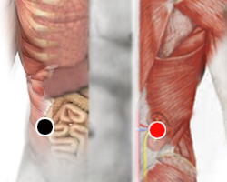

Haemophilus influenzae
Pares
colon ascendente - riñón (D)
ciego - ciego
dorsal 10 - dorsal 10
lacrimal - lacrimal

Generalidades:
Productora de mucho moco dentro del pulmón. Neumonía. También puede producir disfunción eréctil , sangrados, colitis, mala digestión.
Bacteria anaerobia factultativa, existen varios tipos, del cual el más infeccioso es el tipo B. Se le puede considerar un patógeno oportunista. En niños puede complicarse y causar neumonía, meningitis, epiglotitis, otitis, conjuntivitis, sinusitis, sepsis.
Transmisión:
Se transmite por pequeñas gotas expelidas a estornudar o hablar.
El virus de la influenza tiene diversas cepas y esto en alguna medida determina la gravedad de la enfermedad, así como el estado de la persona. Los síntomas más comunes son: mucosidad, dolor de garganta, inflamación, dolor de cabeza, dolor muscular, debilidad y malestar.
Por lo regular el sistema inmune es capaz de controlar la infección en unos cuantos días. En personas inmunodeprimidas o con otras enfermedades como diabetes, cancer, sida, asma, afecciones cardiacas; pueden haber complicaciones como bronquitis, neumonía, otitis, entre otras. De agravarse la enfermedad puede llevar a la muerte.
Transmisión
De persona a persona, por vía aerea. El contagio puede ocurrir desde el primer día que se contraiga la enfermedad hasta más de 7 días después.